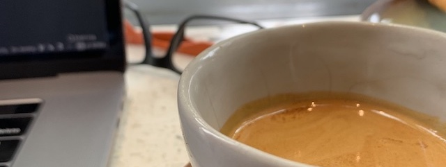

<dl>
    <dt>Bloom</dt>
    <dd>The bloom is a method used in percolation to release carbon dioxide from
        ground coffee. It is used in an effort to increase extraction from the 
        coffee. Most commonly a weight 1-3x that of the ground coffee is poured
        over the grounds and left to sit for a period of 30-45s. With fresh
        coffee you will often see very distinct bubbling.
    </dd>

    <dt>Channeling</dt>
    <dd>Channeling is when water flows through your grinds in focused areas of
        your coffee bed rather than evenly throughout. The most common causes of
        channeling are uneven and bumpy coffee bed, or where pressure
        is applied too small of a grind, or uneven tamping.
    </dd>

    <dt>Ethically Sourced</dt>
    <dd>Ethically sourced coffee is a reference to coffee that has been bought
        at a fair market value. Many expand it beyond that to include a
        sustainable wage for farmers, which according to David at Rabbithole
        Roasters, varies dramatically based on a number of variables including
        exchange rate, local cost of living, regional operating costs, etc. 
    </dd>

    <dt>Extraction</dt>
    <dd>Extraction has multiple meanings. As a process it refers to how water
        and ground coffee interact providing a cup of coffee. As a measurement
        it refers to the amount of soluble particles in a coffee bean are
        absorbed into water.
    </dd>

    <dt>Fines</dt>
    <dd>Fines are ground coffee particles that are typically much smaller than
        the desired grind size. The amount of fines vary depending on the
        quality of grinder. When too many fines exist it often leads to
        over-extraction.
    </dd>

    <dt>Immersion</dt>
    <dd>Immersion is any process where ground coffee is immersed in water for
         the duration of the brew process. Aeropress and French press are
          examples of an immersion brew process.</dd>

    <dt>Percolation</dt>
    <dd>Percolation is any process where water trickles through coffee grounds
        during the brew process. Chemex and V60 are examples of a percolation
        brew process. Many people also refer to this method as "pour-over".</dd>
</dl>
